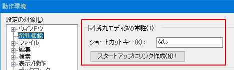

- Windowsが起動する際に秀丸エディタを自動的に常駐させたいのですが。

「その他」→「動作環境」→「常駐機能」→「秀丸エディタの常駐」のチェックボックスで、 常駐のON/OFFを切り替えることが可能です。
動作環境ダイアログを「OK」で閉じる際に、この設定に従い「スタートアップフォルダ」へのショートカットの作成/削除を行います。 (Ver.8.89より、「スタートアップにリンク作成」ボタンが追加になっていて、そこから「ショートカットの作成」が可能です)

- 「秀丸エディタの常駐」をOFFにして、動作環境ダイアログを「OK」で閉じると、 「スタートアップフォルダ」のショートカットを削除します。
- 「秀丸エディタの常駐」をONにして、動作環境ダイアログを「OK」で閉じると、 「スタートアップフォルダ」へショートカットを作成します。
なお、秀丸エディタのインストール時、デフォルトで常駐するように設定されています。 初めて秀丸エディタを使う方は、インストール時の質問にすべて＜はい＞ボタンを押し続けると良いでしょう。
- [補足]
- 「スタートアップフォルダ」に作成されるショートカットは、Ver.8.50から秀丸エディタ本体(hidemaru.exe)ではなく、 別のプログラム(HmResident.exe)になっています。